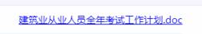
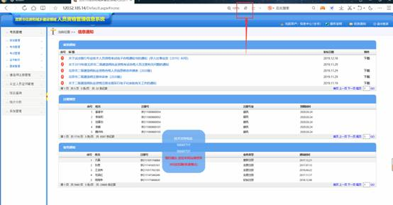
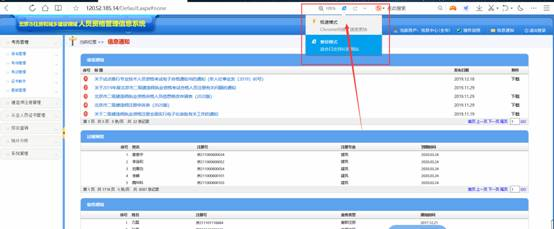
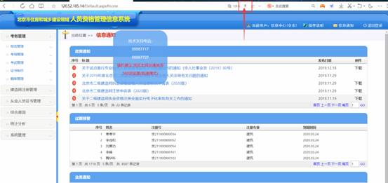

常见问题及处理方法
本文档由北京市住房和建设信息中心、北京新能极科技开发有限公司授权北京市住房和城乡建设领域人员资格管理信息系统项目组撰写，未经本以上单位同意，任何人不得复制、抄袭、转载本文档的全部或部分内容及其它侵害本单位相关权益的行为，任何上述行为，本单位将保留采取法律手段予以解决的权利。
在没有约定的情况下，对于使用本文档带来的任何损失，与本单位无关，本单位不承担任何责任与风险。
如果您不同意上述条款，请不要阅读和使用本文档，一旦阅读和使用本文档，表明您已经同意和接受上述条款和内容。
1.10 二级建造师申请之后申请校验图例（异常标志）说明...
本网站只办理二级建造师和从业人员报考、续期、变更申请业务，一级和一建临时建造师请到一级建造师官网办理。
一级建造师、一级临时建造师、注册造价师、注册监理师数据由住建部相关业务系统同步所得，只用于查询。数据非实时同步，存在一定的时差。
取得北京市二级建造师执业资格证书且符合注册条件的人员，才能申请二级建造师初始注册。按身份证号查询不到执业资格证书信息的，无法发起初始注册申请。
查询不到执业资格证书信息可能存在情况：
1） 当年通过考试，执业证书信息尚未同步到市住建委，请等待。
2） 执业资格证书中的身份证信息与实际不一致，请按系统中政策通知栏目中，按要求提交《北京市二级建造师执业资格合格人员信息修改申请表（2020版）》
1）当注册证书所有专业注销后才允许发起【重新注册】
2）尚存在有效专业，申请新专业注册的请发起【增项注册】
3）注册证书过期了想重新注册的请先发起【注销注册】，办理结束后才能发起重新注册。
1） 二级建造师续期开放时间为特定时间段：有效期届满前90天至30天。
2） 距有效期届满不足30天的不允许发起延续注册，只能发起【注销注册】申请，注销完成后再发起【重新注册】。
1）个人登录系统进行【执业企业变更业务】申报。提交单位审核后，需要现单位和原单位都审核。
2）个人从上一次做【执业企业变更】公告日起，不满一年不允许再次发起【执业企业变更】业务。
1）已取得二级建造师注册证书，现又取得其他专业的《专业类别考试合格证明》，可以办理增项注册业务。
2）二级建造师注册证书已注册多个专业的，其中一个专业过期，先办理【注销注册】中专业注销申请，注销该专业后可重新办理【增项注册】。
3）当年通过考试，执业证书信息尚未同步到市住建委的，请等待数据同步后再发起【增项注册】。
1） 二级建造师注册证书过期后想办理重新注册、增项注册（单专业过期）的需要先办理【注销注册】才能进行其他业务办理。
2） 注册证书单专业或全部专业过期后长时间不主动办理注销的，市住建委定期办理强制注销专业或注册证书。
1） 企业工商信息变更（企业名称、地址、区县）后，请先办理企业资质变更。注意同时变更北京市住房和城乡建设委员会办事大厅企业账户中的相关信息。
2） 待企业资质变更后，系统自动同步企业资质中变更信息。如果名下存在证书，请发起【二级建造师注册】>【企业信息变更】或【从业人员证书管理】>【企业信息变更】，变更名下所有证书的企业信息。
3） 企业有未办结的业务或其他单位调入申请未办结，无法办理企业信息变更。
1）系统不允许一个人同时申请两项二级建造师业务、如果提示有在办业务，
请在系统菜单里面找【二级建造师注册】 > 【申报事项查询】。删除此人之前做的业务后，可进行新业务的申报。
1）当日提交的申请默认显示所有标志，次日进行数据比对，没有问题的旗帜自动清除，仍然存在的请点击旗帜查看具体说明。
2）在施锁定请联系工程所在地区住建委或市住建委交易中心，解除在施锁定项目。解锁完成后、次日数据同步后自动消旗。
3）异常注册有异议请联系市住建委注册中心解锁。
4）社保比对只能比对申报当日起前三个月的社保，无法提供当月社保查询。只保存没有申报的申请系统不比对社保。
企业已办理三证合一系统默认按企业社会统一系统代码和人员身份证号进行申报比对，请个人自行通过第三方渠道查询社保个人权益表。如果企业任按老的组织机构代码上社保，系统查询不到社保。
1）个人登陆系统进行考试报名。可点击【考试报名】页面右上角的 
2）报名保存成功之后请上传扫描件并点击【提交到单位确认】，联系单位进行报名审核。
1）个人登陆系统，在菜单【从业人员证书管理】进行【证书变更】、【证书注销】、【证书离京】。变更申请只需现单位点击确认。
2）【证书离京】中现单位信息无法修改，只需确认原单位信息正确无误即可。
3）【证书离京】业务办结之后，可在【电子证书下载】中下载《证书离京批准书》。
4）一年内最多5次变更单位（项目负责人变更特殊：当大于5次变更时，如果变更前不匹配，变更后匹配允许变更）。
5）只有“安全生产考核三类人员”才能申请证书离京，其它（特种作业、职业技能、专业技术管理人员、造价员）不提供离京变更功能。
6）变更B本时，需要确保B本对应的建造师所处单位信息与B本变更后的单位信息保持一致。
1）个人登陆系统，在菜单【从业人员证书管理】进行【证书续期】。证书过期前三个月允许办理续期。
1）个人登陆系统，在菜单【从业人员证书管理】进行【三类人证书进京】。
2）个人已经提交过相同的岗位工种的进京申请了，不能重复申请
3）申请人员在京存在有效的同一岗位证书，不允许申请进京。企业负责人可以重复申请，但必须保证单位不同
4）每人只能有一个"项目负责人"和"专职安全生产管理人员"证，且两本必须在同一单位。项目负责人（B本），身份证一致且新单位组织机构代码与建造师证书一致的允许进京。
1）个人登陆系统，在菜单【从业人员证书管理】进行【法人A本增发】。
2）企业法人名下有多家建筑企业,有一本A证,个人可网上发起A本增发申请。
3）增发A证的发证日期与有效期将于原持有A证保持一致，便于未来同时续期。
1）个人登陆系统，在菜单【电子证书下载】进行【电子证书下载】。
2）当日办结的业务,电子证书需要1-2天时间更新。
解决方法：在《信息查看》目录下点击《企业信息》查看是否选择监管区县。如已选择区县、区县建委还是查不到、将之前的申请删除后，重新申报。
解决方法：
1如：使用360安全浏览器，请设置成极速模式
1） 2如：执业资格证书补办过，请按系统中政策通知栏目中，按要求提交《北京市二级建造师执业资格合格人员信息修改申请表（2020版）》。
3请确认此人之前证书已注销。
解决方法：填写劳动合同时间并保存后，再进行删除。
解决方法：企业登录北京市住房和城乡建设领域人员资格管理信息系统里，分别做【二级建造师注册】下的【企业信息变更】和【从业人员证书管理】下的【企业信息变更】业务，如公司名下有一级建造师、请先在一级建造师系统里面做变更。待一级建造师变更完成后，再做二级建造师的【企业信息变更】。
解决方法：如区县建委审核不通过，可让区县建委驳回；如市住建委审核不通过，在公示期内的可提交申诉。
解决方法：使用360安全浏览器并切换成《极速模式》或使用搜狗浏览器。
360极速模式设置方法：
使用360浏览器。在办理业务的当前页面上，看一下360浏览器输入地址栏后面的小图标是否字母E(兼容模式)或者风车形状(安全模式)【图1】。如果是点击图标【图2】，换成闪电图标(极速模式) 【图3】。然后在重新操作页面就可以了。

图1

图2

图3
解决方法：请确认企业信息填写完整、并删除之前申请的业务后、重新申请。
解决方法：请在其他电脑，或使用不同版本word打开。
解决方法：个人登录系统，在系统菜单里面找【二级建造师注册】--【执业企业变更】或【申报事项查询】。删除此项业务或取消申报，重新添加调入申请。
解决方法：个人登录系统，在系统菜单里面找【二级建造师注册】---【申报事项查询】。删除该建造师未办结的业务、再发起注销注册。
解决方法：
1：在查询条件中，确认岗位工种是否选择正确。
2：查看证书是否未处于可办理续期的时间段中。
3：在查询条件中，确认申请状态是否选择正确。